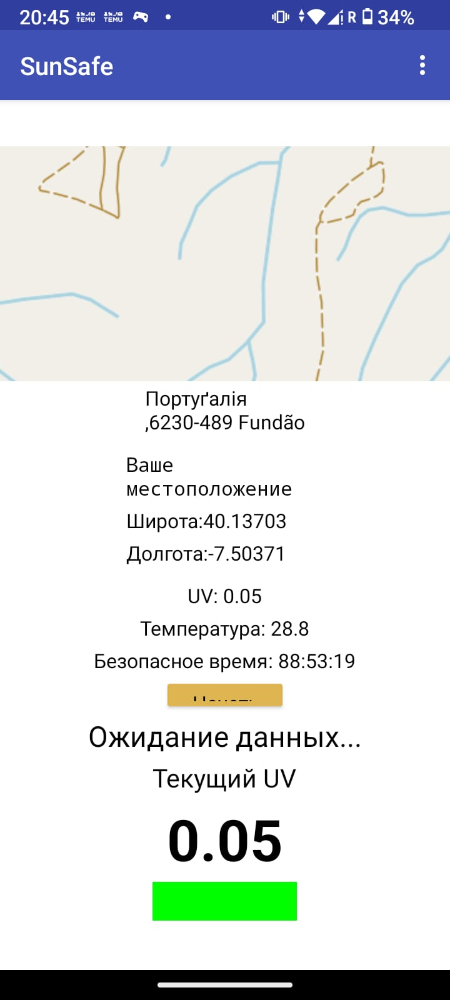

Приложение, которое анализирует UV-индекс, температуру и время нахождения на солнце, помогая подобрать безопасное время для отдыха.

SunSafe — это приложение для контроля времени нахождения на солнце. Оно создано для того, чтобы помочь людям безопасно отдыхать на улице, избегая чрезмерного воздействия ультрафиолетового излучения. Приложение анализирует уровень UV-индекса, температуру окружающей среды и другие параметры, после чего рассчитывает оптимальное время пребывания на солнце. Главная идея проекта — объединить технологии и заботу о здоровье, создав простой и понятный инструмент для ежедневного использования.
Мобильное приложение
Android
В разработке
2026
Минимализм
Beta 2.1
Приложение получает информацию об уровне ультрафиолетового излучения и использует её для расчета безопасного времени.
После расчета приложение показывает оставшееся время и помогает контролировать пребывание на солнце.
Температура окружающей среды используется для более точной оценки условий отдыха на улице.
В будущем приложение сможет учитывать индивидуальные параметры пользователя для более точных расчетов.
Время пребывания можно разделить на несколько этапов, чтобы пользователь понимал, когда стоит сделать перерыв.
Все необходимые данные отображаются понятно и удобно, без сложных настроек.